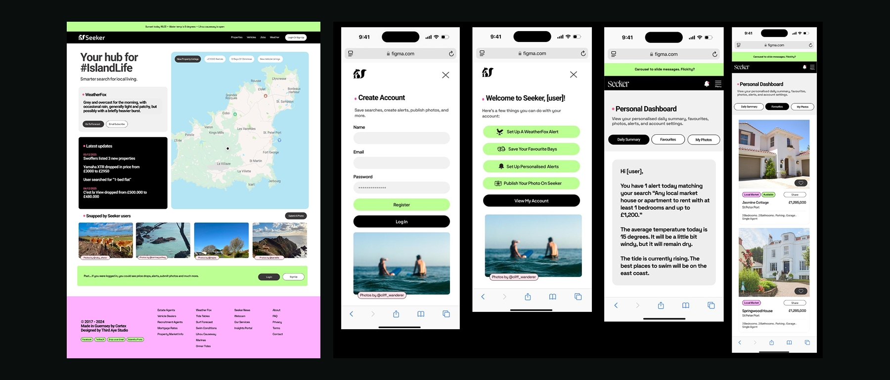

Seeker had grown organically and the user experience hadn't kept pace. New users struggled to understand the full range of features, the signup flow had drop-off issues, and the dashboard felt cluttered. The redesign needed to simplify without removing functionality.
We started with the signup flow, reducing friction and adding a clear onboarding sequence that introduced users to key features like WeatherFox alerts and property notifications. The homepage was restructured to surface dynamic content, and the dashboard was reorganised around daily use patterns.